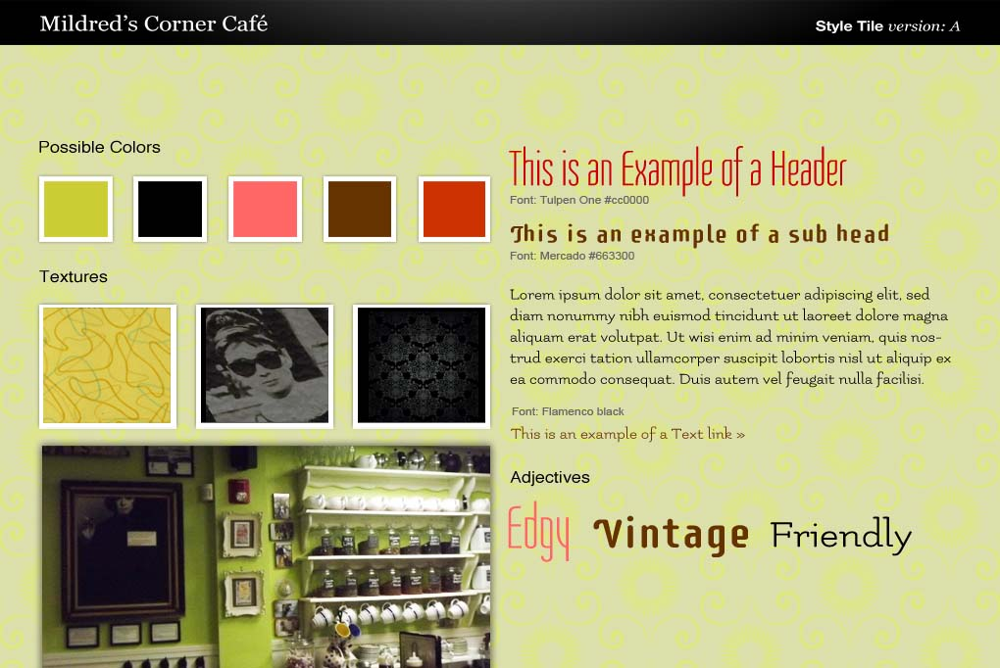
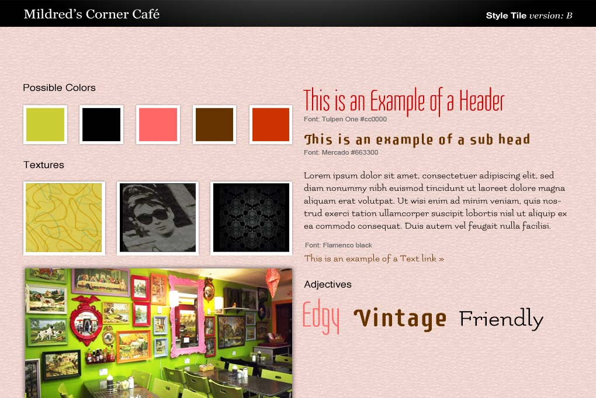

Mildred's is a small cafe in Lynn, on the corner of my street. The proprietress, Jan, is our neighbor and friend. You enter her cafe through her vintage shop, which is lime green, pink and red. And an array of her favorite items, paint by numbers she picks up at flea markets on her walls. How she makes those garish colors work harmoniously is beyond me. Giant velvet curtains leads you to the cafe which has a full wall of apothecary jars holding loose teas, classic movies on an endless loop, smiling faces at the counter and food inspired by her whims.
Below are two style tiles for her website.
--Lisa McKenna, Sprint 4, SIB
 